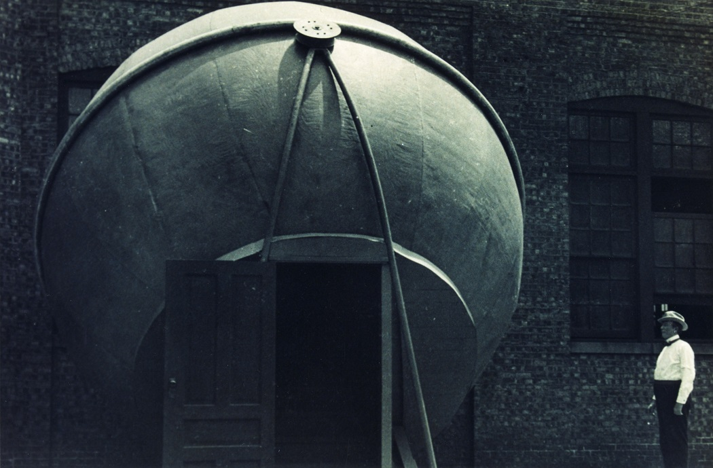
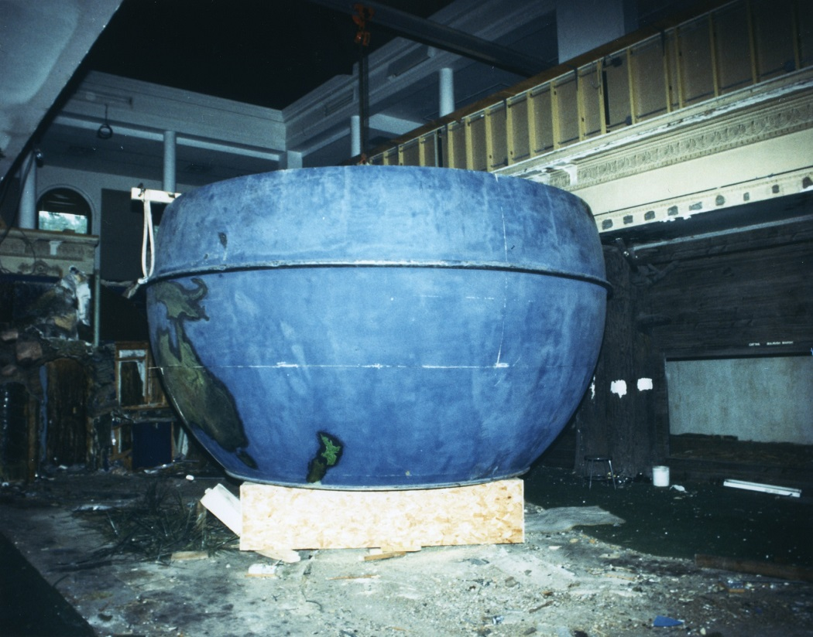

Прежде всего, мы не можем говорить о нашем ночном небе, не говоря об исторической Сфере Этвуда. Адлер повезло назвать себя домом для этой невероятной части чикагской истории. Это самый старый симулятор неба в мире, все еще работающий, дебютировавший в Чикагской академии наук (CAS) в 1913 году.
Первоначально названный Atwood Celestial Sphere, планетарий был спроектирован американским географом и геологом доктором Уоллесом Этвудом специально для CAS с целью помочь другим узнать о ночном небе Чикаго. Комиссионные за выставку стоили 10 000 долларов - самая большая сумма в долларах, выплаченная за один элемент выставки в CAS на сегодняшний день.
Структура состоит из большой вращающейся сферы, изготовленной из оцинкованного листового металла диаметром около пяти метров (~ 16 футов). 692 перфорированных отверстия в металлическом листе купола имитируют звезды, которые в принципе видны невооруженным глазом из Чикаго. (Хотя в настоящее время из-за светового загрязнения обычно можно увидеть только несколько). Оператор внутри купола управляет аппаратом, чтобы вращать сферу, показывая, как звезды, кажется, движутся в небе в течение ночи в результате вращения Земли.
Сфера провела пару десятилетий в CAS, но интерес с 1930 года постепенно снижался из-за открытия более совершенного Адлерского Планетария, в котором был представлен инновационный проектор Zeiss. В это время, во время Второй мировой войны, Сфера была передана в распоряжение Военно-морского резерва США, расположенного в кампусе Чикаго Северо-Западного университета для обучения астрономической навигации.
В 1959 году CAS попытается внести изменения в Сферу, чтобы сделать ее более привлекательной для публики, в том числе нарисовать внешний вид земного шара. Этих изменений было бы недостаточно для повышения общественного интереса. Вместо этого Сфера оставалась бездействующей в течение нескольких десятилетий, пока в конце концов не добралась до Планетария Адлера в январе 1997 года. В результате этого перемещения Адлер вернул Сферу из морального износа, которому он изначально способствовал. С того времени гости смогли посетить два символических планетария Чикаго в одном месте за одно посещение.
Сфера Этвуда будет играть важную роль в ночном небе Чикаго. Это даст людям возможность пережить часть истории Чикаго и исследовать наше ночное небо, все, служа в качестве анкерной части для деятельности в окрестностях галереи.
Но после нескольких лет ежедневного использования здесь, в Адлере, Сфера Этвуда нуждается в небольшом TLC. Мишель Николс, директор по общественным наблюдениям в Адлере, в настоящее время занимается восстановлением внутренней части Сферы. Обширный перечень материалов, необходимых для завершения работы, включает некоторые неожиданные предметы, в том числе не менее 700 зубочисток, УФ-краску, светодиодную черную лампу и строительные леса.